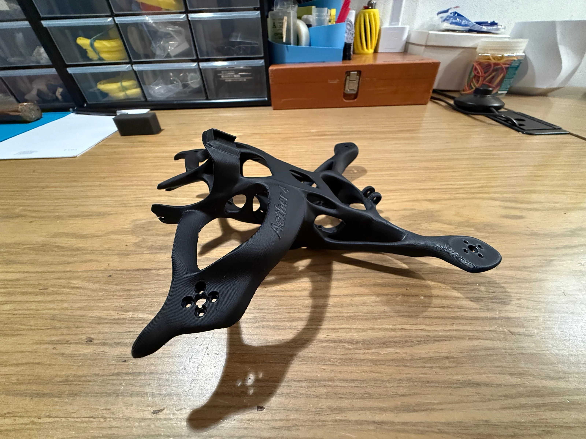
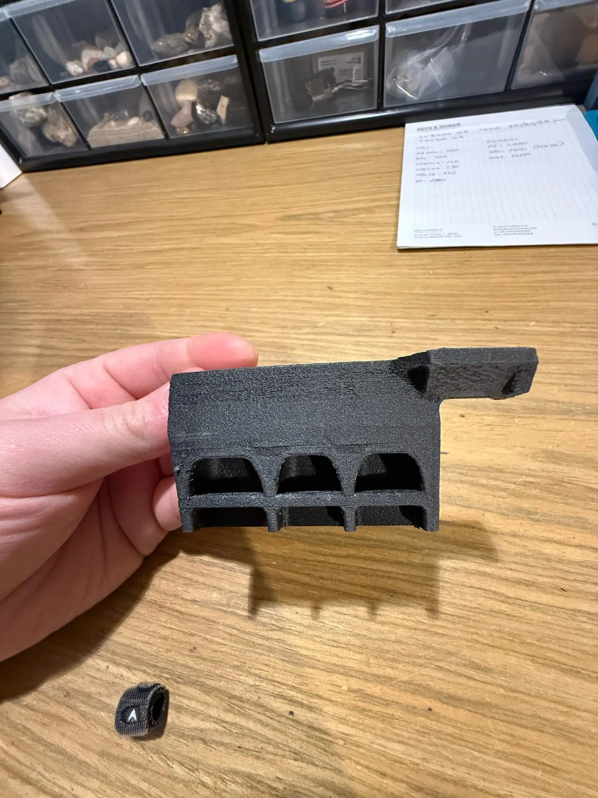
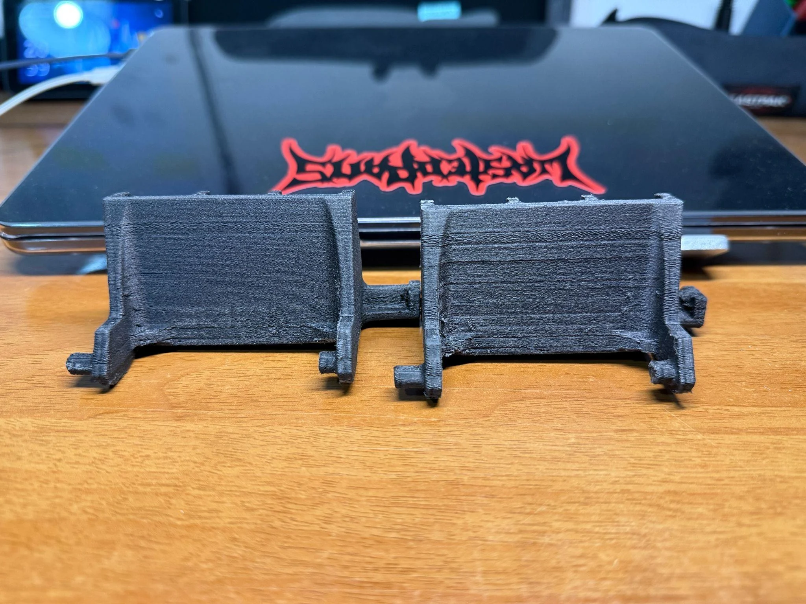
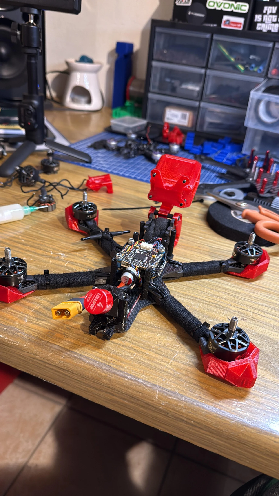

Progettazione · modellazione · fabbricazione
Dal modello,
al pezzo.
Uso la modellazione e la stampa 3D per passare dal disegno a un oggetto che posso maneggiare. Lavoro con resina e filamento, dalla preparazione del modello alla realizzazione di componenti e prototipi.
- Abilitazione
- Stampa 3D · Politecnico di Milano · 2025
- Strumenti
- Rhino · Grasshopper · Blender
- Collaborazione
- Mattia Soffiato ↗

Disegnare, stampare, confrontare
Un metodo di lavoroNel modello definisco geometrie e ingombri. Il pezzo fisico mi permette di osservare la forma da vicino e di ragionare sul rapporto con gli altri componenti: un passaggio tra disegno, fabbricazione e assemblaggio.
- 01ModellareGeometria e ingombri
- 02PreparareFile e processo
- 03OsservareForma nello spazio
Componenti sul banco
02—03


Un sistema di parti
Come stanno insieme i pezzi.
Ho lavorato alla prototipazione dei droni e alla stampa 3D dei componenti insieme a Mattia Soffiato.
- Filippo Antonio Visentin
- Contributo principale: stampa 3D dei componenti.
- Mattia Soffiato ↗
- Contributo principale: costruzione e assemblaggio dei droni, schede elettroniche e motori.
Prototipazione droni e stampa 3D · lavoro condiviso